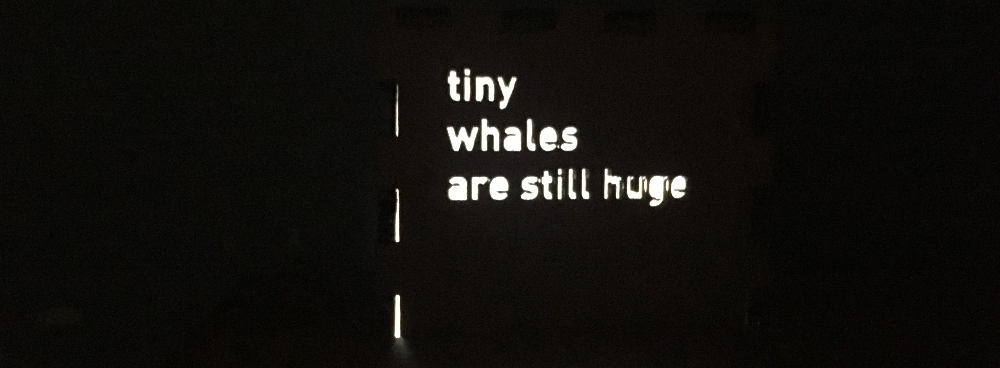
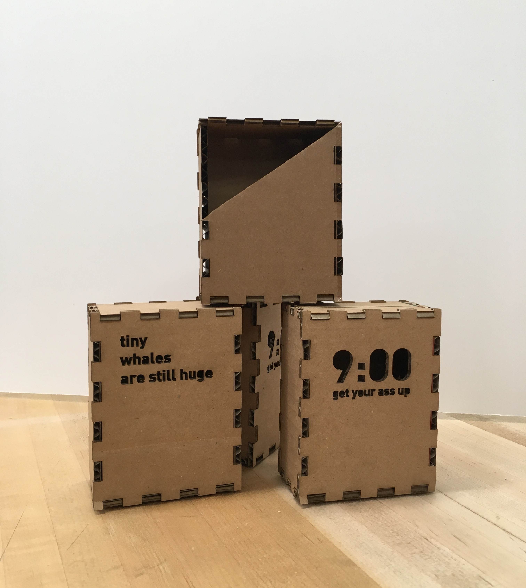
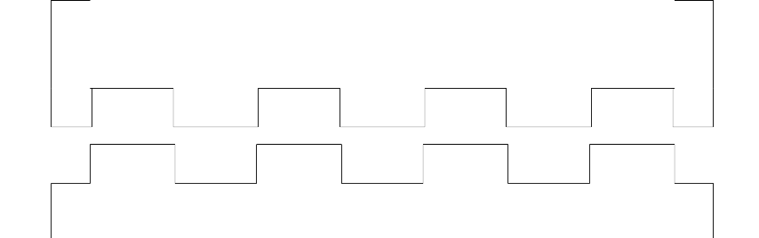
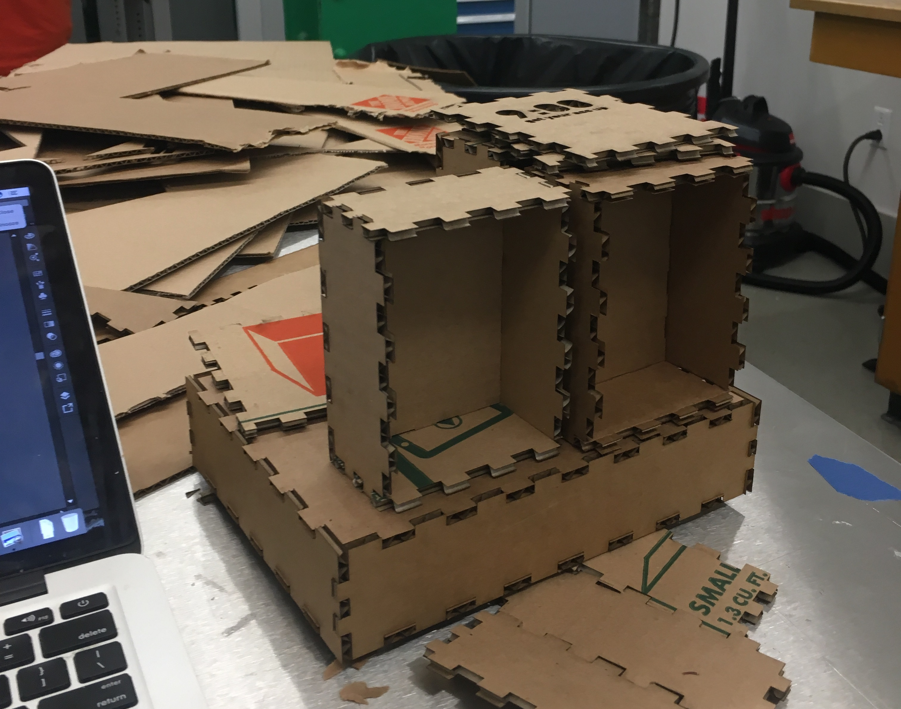
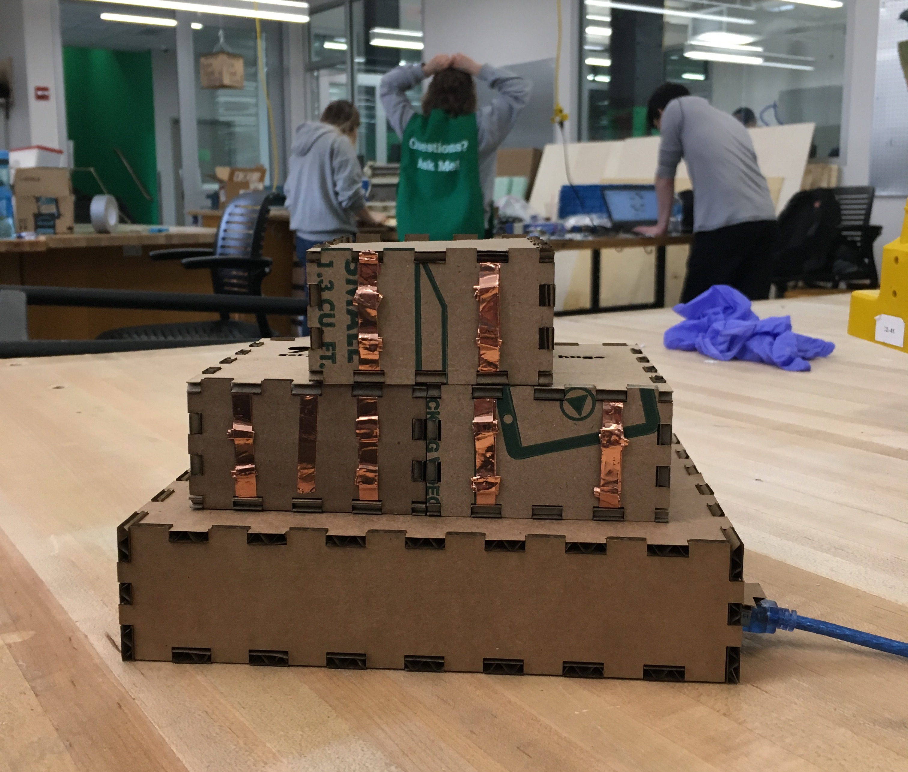

For this project, something about the idea of cartridges or modular units that change the functionality of the lamp was extremely interesting to me. The form was inspired by this moodboard, and the locking/fastening/construction this moodboard.
Final Product
A video of each unit working. In future iteration, the Wake-Up unit would actually light up at the time it indicates.

Unit #1 (Quotation)
Unit #2 (Alarm Clock)

All 3 together
Design and Fabrication Photos

The interlock between each face of each box was a simple press fit. After several iteration of adjusting the overlap between the notch and gap, .09in was found to be the best balance of snug and easy to use

I then began lasercutting each unit box and the base box. (1)
I then began lasercutting each unit box and the base box. (2)

The bottom of each unit contains a copper strip such that when it is inserted into the base, it meshes and creates a circuit with similar strips on the interior bottom of the base box.